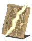

Descrição: Milagre que dispara uma grande lança de raio. Dizem ser o legado de um clã ancestral cujo líder era venerado como o Deus do Sol.
O nome do clã foi perdido no tempo, mas a incandescência pura de nosso magnífico pai jamais enfraquecerá.
Localização:
Usos: 2
